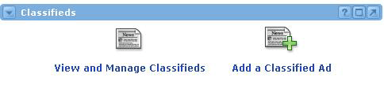
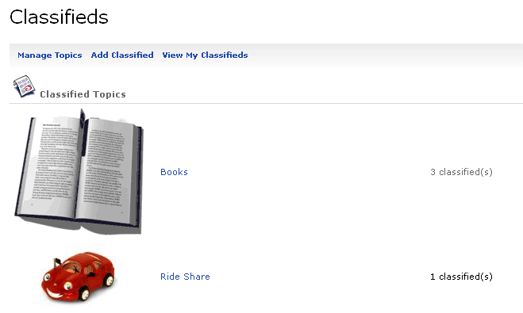

The administrator can create/edit topics as well as give permissions to the individuals who will approve classifieds that are submitted for a specific topic.

Topics Administration
In order for classifieds to be entered, a list of topics must first be added to the system. Once permissions have been added, privileged users can click the View and Manage Classifieds link and see the Manage Topics link listed in their menu of choices. The administrator can choose to add a new topic or edit an existing one by clicking the Manage Topics link.
Adding a topic:
The following information is needed to add a new topic:
Note: Icons can be uploaded and added to the available options
Once a topic has been added, users of the channel will be able to add classifieds.
